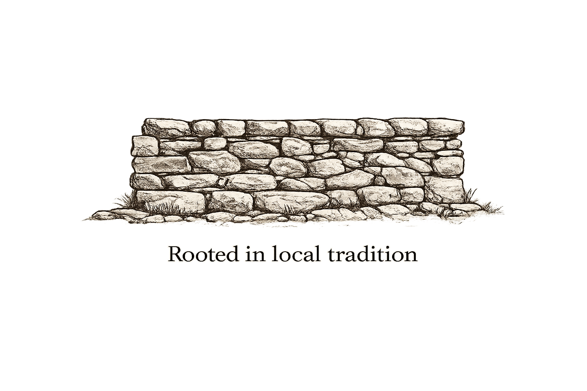

Start with what is already there.
I look at how people use a place, what they value and what might make it easier to spend time there. Existing habits, local knowledge and materials can all become starting points for a design.
I’m Jack Howard, a spatial designer based in Cork, Ireland. Through How Are You?, I explore how places can invite people to gather, play, make things and feel more connected to their surroundings.

I’m interested in the small changes that make a place feel different: somewhere to sit, a reason to stay, something to build together. My work moves between public space, furniture, temporary installations and place-based research, with an emphasis on what people can do and experience within them.
My background is in interior architecture and design. I bring that understanding of space together with practical making, observation and a willingness to experiment. I like projects that begin with a question and develop through being tried, used and changed.
A Culture Moves Europe-supported research visit to Copenhagen informed StepSeat, a portable seat for Cork’s riverside steps. In Granada, I co-designed and fabricated a stage environment for TEDxGranada. These projects have taken me from looking closely at everyday public life to building something for a live event.
I look at how people use a place, what they value and what might make it easier to spend time there. Existing habits, local knowledge and materials can all become starting points for a design.
I use drawing, models and full-size prototypes to make an idea tangible. Working directly with materials helps me test what is useful, what can be built and where an unexpected possibility might lead. Creative reuse is part of that approach: working with what is available can shape both the process and the result.
I’m drawn to participation that feels approachable. At FORT, familiar materials and a simple framework invited visitors of all ages to build and change the installation together. I’m interested in how that same sense of permission can open up conversations about shared spaces and the people who shape them.
I created a participatory installation for Culture Night, giving visitors a starting structure they could build on and inhabit together.
I researched, prototyped and made a portable seat that supports the way people already gather on Cork’s riverside steps.
I made usable furniture from locally found scrap, exploring a process I’m interested in developing into a shared workshop format.
I co-designed, fabricated and helped install a stage environment, bringing sketches, timber structures and lighting together for a live event.
I’m looking to connect with artists, cultural organisations, community groups and placemaking teams in Ireland and across Europe. I can bring spatial design, prototyping and practical making to workshops, temporary interventions and collaborative projects.
I’m particularly interested in work that brings creativity into everyday places, makes room for people to contribute, or finds new possibilities in existing materials. I’d love to exchange ideas, contribute to a project and learn alongside people working in different contexts.